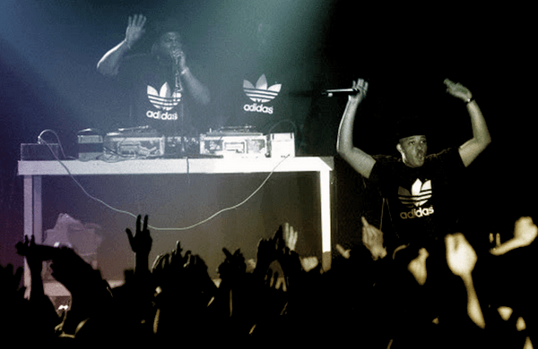
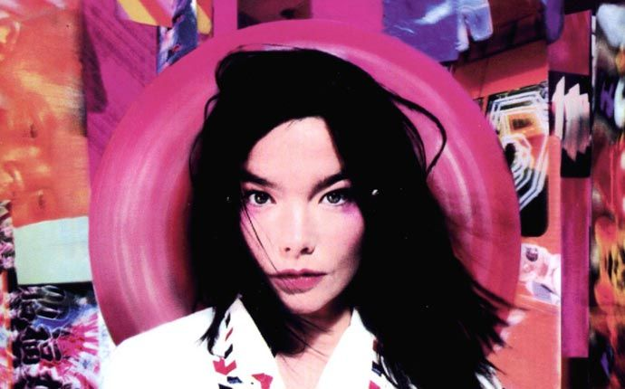

<!--
  Generated template for the MainmenuPage page.

  See http://ionicframework.com/docs/components/#navigation for more info on
  Ionic pages and navigation.
-->
<ion-header>
  
  <ion-navbar>
      <button ion-button menuToggle>
          <ion-icon name="menu"></ion-icon>
      </button>
    
    <ion-title>mainmenu</ion-title>
  </ion-navbar>

</ion-header>


<ion-content padding>

    <ion-grid>
        <ion-row>
          <ion-col>
            1 of 2
            
            <!--<button ion-button (click)="irBusqueda()">BUSQUEDA.</button>-->
          </ion-col>
          <ion-col>
            2 of 2
            
          </ion-col>
        </ion-row>
        
        <ion-row>
            <ion-col>
              1 of 2
              
            </ion-col>
            <ion-col>
              2 of 2
              
            </ion-col>
          </ion-row>
          
          <ion-row>
              <ion-col>
                1 of 2
                
              </ion-col>
              <ion-col>
                2 of 2
                
              </ion-col>
            </ion-row>
    
      </ion-grid>

</ion-content>
